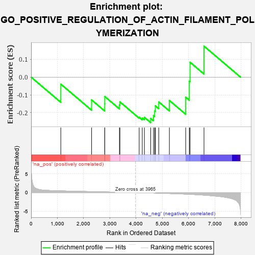
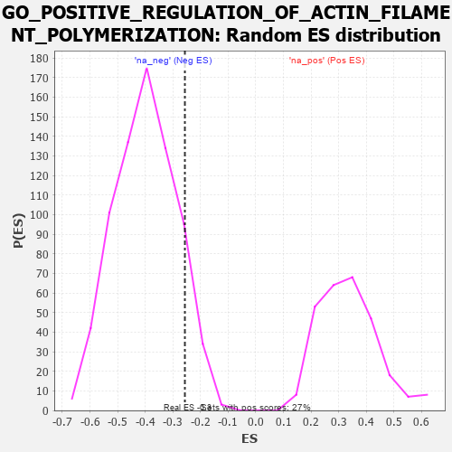

| | | Dataset | 7d |
| Phenotype | NoPhenotypeAvailable |
| Upregulated in class | na_neg |
| GeneSet | GO_POSITIVE_REGULATION_OF_ACTIN_FILAMENT_POLYMERIZATION |
| Enrichment Score (ES) | -0.2566278 |
| Normalized Enrichment Score (NES) | -0.6409799 |
| Nominal p-value | 0.9092159 |
| FDR q-value | 1.0 |
| FWER p-Value | 1.0 |
Table: GSEA Results Summary

Fig 1: Enrichment plot: GO_POSITIVE_REGULATION_OF_ACTIN_FILAMENT_POLYMERIZATION
Profile of the Running ES Score & Positions of GeneSet Members on the Rank Ordered List
| PROBE | GENE SYMBOL | GENE_TITLE | RANK IN GENE LIST | RANK METRIC SCORE | RUNNING ES | CORE ENRICHMENT | | 1 | NCK2 | | | 1131 | 0.458 | -0.0395 | No |
| 2 | WASF1 | | | 2303 | 0.259 | -0.1285 | No |
| 3 | FER | | | 2803 | 0.183 | -0.1501 | No |
| 4 | BRK1 | | | 2805 | 0.183 | -0.1093 | No |
| 5 | FMN1 | | | 3363 | 0.095 | -0.1580 | No |
| 6 | GMFB | | | 3381 | 0.091 | -0.1396 | No |
| 7 | MTOR | | | 4114 | -0.025 | -0.2261 | No |
| 8 | ARPC2 | | | 4232 | -0.047 | -0.2302 | No |
| 9 | BAG4 | | | 4314 | -0.061 | -0.2266 | No |
| 10 | ABI2 | | | 4554 | -0.106 | -0.2328 | Yes |
| 11 | ARPC3 | | | 4659 | -0.129 | -0.2169 | Yes |
| 12 | ARF6 | | | 4704 | -0.140 | -0.1911 | Yes |
| 13 | WASF3 | | | 4730 | -0.145 | -0.1616 | Yes |
| 14 | DLG1 | | | 4860 | -0.169 | -0.1399 | Yes |
| 15 | PICK1 | | | 5265 | -0.263 | -0.1316 | Yes |
| 16 | ARPC4 | | | 5886 | -0.430 | -0.1130 | Yes |
| 17 | JMY | | | 6023 | -0.479 | -0.0226 | Yes |
| 18 | EVL | | | 6052 | -0.490 | 0.0838 | Yes |
| 19 | ARF1 | | | 6583 | -0.701 | 0.1745 | Yes |
Table: GSEA details [plain text format]

Fig 2: GO_POSITIVE_REGULATION_OF_ACTIN_FILAMENT_POLYMERIZATION: Random ES distribution
Gene set null distribution of ES for GO_POSITIVE_REGULATION_OF_ACTIN_FILAMENT_POLYMERIZATION